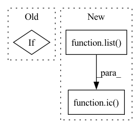

Pattern ID :9961

Before Change
vb = self.vertical_bars[idx].single()
pnm_ = vb.pnm_with_max_pitch(method="midi")
assert bar.number == idx
if idx == 6:
bar.show(fmt="musicxml.png")
vb[pnm_].show(fmt="musicxml.png")
if pnm_ != pnm:
After Change
part.replace(bar, vb[pnm_])
part.partName = f"{PROJ_NM}, CH /Ǘ"
ic(list(part.measure(0)))
// for bar in part[m21.stream.Measure]:
// tempos = bar[m21.tempo.MetronomeMark]
// if tempos:
// // ic(list(tempos))
In pattern: SUPERPATTERN
Frequency: 3
Non-data size: 3
Instances
Fragment ID: 35602031
Project Name: stefanheng/symbolic-music-generation
Commit Name: 4a5a5847113d13d252e65668534ef6ab096ff24c
Time: 2021-11-25
Author: 43276957+SpongeBobBang@users.noreply.github.com
File Name: melody_extractor.py
M Class Name: MxlMelodyExtractor
N Class Name: MxlMelodyExtractor
M Method Name: bar_with_max_pitch(2)
N Method Name: bar_with_max_pitch(2)
M Parent Class:
N Parent Class:
M File Name: melody_extractor.py
N File Name: melody_extractor.py
M Start Line: 302
M End Line: 347
N Start Line: 346
N End Line: 379
'>
Before Change
dir_nm = config(f"{DIR_DSET}.MXL_EG.dir_nm")
dir_nm = f"{dir_nm}_out"
scr.write(fmt="mxl", fp=os.path.join(PATH_BASE, DIR_DSET, dir_nm, f"{title}.mxl"))
elif exp == "symbol":
// Per `music21`, duration is represented in terms of quarter notes
slot_dur = int(2**-2 / 2**-self.prec) // Duration of a time slot
ic(slot_dur)
After Change
// exit(1)
// Get signature for each bar
bars = iter(list(part[m21.stream.Measure]))
bar0 = next(bars)
ts = next(bar0[m21.meter.TimeSignature])
lst_bar_n_ts = [(bar0, ts)]
ic(list(bar0))
// ic(list(bars))
for bar in bars:
// while bars:
// bar = next(bars)
// ic(list(bar))
ts_: m21.stream.iterator.RecursiveIterator
ts_ = bar[m21.meter.TimeSignature]
if ts_:
// ic(list(ts_))
// ic(ts_, bar.number)
ts = next(iter(ts_))
lst_bar_n_ts.append((bar, ts))
// ic(list(bar))
// ic(list(bar[m21.note.Rest or m21.tempo.MetronomeMark]))
// exit(1)
// ic(bar)
ic(lst_bar_n_ts)
exit(1)
else:
return scr
'>
Fragment ID: 35602030
Project Name: stefanheng/symbolic-music-generation
Commit Name: 602db438aa5b4cb140b74186c6ec72d099a9b425
Time: 2021-12-18
Author: 43276957+SpongeBobBang@users.noreply.github.com
File Name: melody_extractor.py
M Class Name: MxlMelodyExtractor
N Class Name: MxlMelodyExtractor
M Method Name: bar_with_max_pitch(2)
N Method Name: bar_with_max_pitch(2)
M Parent Class:
N Parent Class:
M File Name: melody_extractor.py
N File Name: melody_extractor.py
M Start Line: 372
M End Line: 377
N Start Line: 366
N End Line: 438
'>
Before Change
// ic(idxs)
id_ = self.tokenizer(e)
if bar.number == 6:
// bar.show()
ic(e, vars(e), strt, dur)
// ic(self.enc, len(self.enc))
After Change
strt, dur = e.offset, e.duration.quarterLength
num = n_slots_per_beat*dur + 1
if bar.number == 73:
ic(list(bar))
assert num.is_integer()
idxs_ = (np.linspace(strt, strt+dur, num=int(num)) * n_slots_per_beat)[:-1]
idxs = idxs_.astype(int)
assert np.all(idxs_-idxs == 0) // Should be integers
'>
Fragment ID: 35602029
Project Name: stefanheng/symbolic-music-generation
Commit Name: 8d126cbf838b183b5e5d3de6015f90ece225b964
Time: 2021-12-19
Author: 43276957+SpongeBobBang@users.noreply.github.com
File Name: melody_extractor.py
M Class Name: BarEnc
N Class Name: BarEnc
M Method Name: __init__(4)
N Method Name: __init__(4)
M Parent Class:
N Parent Class:
M File Name: melody_extractor.py
N File Name: melody_extractor.py
M Start Line: 422
M End Line: 447
N Start Line: 424
N End Line: 439